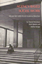
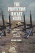

Browse
other Author lists:
A B C
D E F
G H I
J K L
M N O
P Q R
S T U
V W X
Y Z |
 |
Prison
Masculinities
edited
by Sabo, Don, Terry A. Kupers and Willie London
296 pp • 7x10 • Fall 2000
paper 978-1-56639-816-9
cloth 978-1-56639-815-2
|
 |
In a Queer Voice
Journeys of Resilience from Adolescence to Adulthood
Sadowski, Michael, foreword by Carol Gilligan
210 pp • 6x9 • Fall 2012
paper 978-1-4399-0802-0
cloth 978-1-4399-0801-3 |
 |
Israel's Dead Soul
Salaita, Steven
176 pp • 5.5x8.25 • Spring 2011
paper 978-1-4399-0638-5
cloth 978-1-4399-0637-8
|
|
The
Solicitor General
The Politics of Law
Salokar,
Rebecca Mae
250 pp • 6x9 • Spring 1992
paper 978-1-56639-260-0
cloth 978-0-87722-926-1 |

|
Higher Education and Democracy
Essays on Service-Learning and Civic Engagement
Saltmarsh, John and Edward A. Zlotkowski
416 pp • 6x9 • Fall 2010
cloth 978-1-4399-0037-6
|

|
"To Serve a Larger Purpose"
Engagement for Democracy and the Transformation of Higher Education
Edited by Saltmarsh, John and Matthew Hartley
304 pp • 6x9 • Spring 2011
paper 978-1-4399-0507-4
cloth 978-1-4399-0506-7
|

|
The Borders of Justice
edited by Balibar, �tienne, Sandro Mezzadra and Ranabir Samaddar
224 pp • 6x9 • Fall 2011
paper 978-1-4399-0686-6
cloth 978-1-4399-0685-9
|
|
The
Right to Privacy
Gays, Lesbians, and the Constitution
Samar,
Vincent J.
260 pp • Spring 1991
paper 978-0-87722-952-0
cloth 978-0-87722-796-0 |
 |
Elements of Discipline
Nine Principles for Teachers and Parents
Greenspan, Stephen, foreword by Arnold Sameroff
214 pp • 6x9 • Fall 2012
paper 978-1-4399-0897-6
cloth 978-1-4399-0896-9
|
 |
Terrorizing Latina/o Immigrants
Race, Gender, and Immigration Politics in the Age of Security
Sampaio, Anna
230 pp • 6x9 • Fall 2015
paper 978-1-4399-1286-7
cloth 978-1-4399-1285-0
|
 |
The
Cry and the Dedication
Bulosan,
Carlos, edited by E. San Juan, Jr.
344 pp • 6x9 • Spring 1995
paper 978-1-56639-296-9
cloth 978-1-56639-295-2
|
 |
The
Philippine Temptation
Dialectics of Philippines-U.S. Literary Relations
San
Juan, Jr., E.
320 pp • 6x9 • Spring 1996
paper 978-1-56639-418-5
cloth 978-1-56639-417-8
|
 |
On
Becoming Filipino
Selected Writings of Carlos Bulosan
Bulosan,
Carlos, edited by E. San Juan, Jr.
240 pp • 5.5x8.25 • Spring 1995
paper 978-1-56639-310-2
cloth 978-1-56639-309-6 |
 |
Technological
Change and Co-Determination in Sweden
Sandberg,
�ke with Gunnar Broms Arne Grip Lars Sundstrom Jesper Steen
and Peter Ullmark, foreword by Andrew Martin
360 pp • 6x9 • Spring 1992
cloth 978-0-87722-918-6
|
 |
Customizing
the Body
The Art and Culture of Tattooing
Sanders,
Clinton R. and D. Angus Vail
Revised and Expanded Edition
280 pp • 5.5x8.25 • Spring 2008
paper 978-1-59213-888-3
cloth 978-1-59213-887-6
|
 |
Regarding
Animals
Arluke,
Arnold and Clinton R. Sanders
256 pp • 5.5x8.25 • Spring 1996
paper 978-1-56639-441-3
cloth 978-1-56639-440-6
|
 |
Understanding
Dogs
Living and Working with Canine Companions
Sanders,
Clinton R.
224 pp • 6x9 • Spring 1999
paper 978-1-56639-690-5
cloth 978-1-56639-689-9
|
 |
St.
Louis
The Evolution of an American Urban Landscape
Sandweiss,
Eric
296 pp • 7x10 • Spring 2001
paper 978-1-56639-886-2
cloth 978-1-56639-885-5
|
|
Racial Feelings
Asian America in a Capitalist Culture of Emotion
Santa Ana, Jeffrey
272 pp • 6x9
• Spring 2015
paper 978-1-4399-1193-8
cloth 978-1-4399-1192-1 |
|
Bad
Faith, Good Faith, and Authenticity in Sartre's Early Philosophy
Santoni,
Ronald E.
288 pp • 5.5x8.25 • Spring 1995
paper 978-1-56639-320-1
cloth 978-1-56639-319-5 |
 |
Morals,
Reason, and Animals
Sapontzis,
S. F.
328 pp • Fall 1987
paper 978-0-87722-961-2
cloth 978-0-87722-493-8
|
 < < |
The
Skeptical Visionary
A Seymour Sarason Education Reader
edited
by Fried, Robert L., Seymour Sarason
312 pp • 7x10 • Fall 2002
paper 978-1-56639-980-7
cloth 978-1-56639-979-1
|
 |
Frontiers
of Illusion
Science, Technology, and the Politics of Progress
Sarewitz,
Daniel
256 pp • 6x9 • Spring 1996
paper 978-1-56639-416-1
cloth 978-1-56639-415-4
|

|
Danny
Litwhiler
Living the Baseball Dream
with Sargent, Jim, by Danny Litwhiler, foreword by Stan Musial
312 pp • 6x9 • Fall 2006
cloth 978-1-59213-524-0
|
|  |
Agency-Based
Social Work
Neglected Aspects of Clinical Practice
Weissman,
Harold, Irwin Epstein and Andrea Savage
384 pp • Fall 1983
paper 978-0-87722-330-6
cloth 978-0-87722-322-1 |
|
The
Sponsored Life
Ads, TV, and American Culture
Savan,
Leslie
368 pp • 6x9 • Fall 1994
paper 978-1-56639-245-7
cloth 978-1-56639-244-0
|
|
Crime and Family
Selected Essays of Joan McCord
McCord, Joan, introduction by David Farrington, foreword by Geoffrey Sayre-McCord
320 pp • 6x9 • Fall 2006
paper 978-1-59213-558-5
cloth 978-1-59213-557-8
|

|
On the Stump
Campaign Oratory�and Democracy in the United States, Britain, and Australia
Scalmer, Sean
232 pp • 6x9 • Fall 2017
paper 978-1-4399-1504-2
cloth 978-1-4399-1503-5
|
 |
Fishy
Business
Salmon, Biology, and the Social Construction of Nature
Scarce,
Rik
272 pp • 6x9 • Fall 1999
paper 978-1-56639-729-2
cloth 978-1-56639-728-5
|
 |
"Batting
Cleanup, Bill Conlin"
edited
by Kerrane, Kevin, foreword by Dick Schaap
240 pp • 6x9 • Spring 1997
cloth 978-1-56639-541-0
|
|
Garden
Cities for America
The Radburn Experience
Schaffer,
Daniel
290 pp • Spring 1982
cloth 978-0-87722-258-3 |
 |
The
German Greens
Paradox between Movement and Party
edited
by Mayer, Margit and John Ely, translated by Michael Schatzschneider
352 pp • 6x9 • Spring 1997
paper 978-1-56639-516-8
cloth 978-1-56639-515-1 |
|
Messiahs of 1933
How American Yiddish Theatre Survived Adversity through Satire
Schechter, Joel
304 pp • 6x9 • Spring 2008
cloth 978-1-59213-872-2
|
 |
Hung
Jury
The Diary of a Menendez Juror
Thornton,
Hazel, commentaries by Lawrence S. Wrightsman, Amy J. Posey
and Alan W. Scheflin
200 pp • 5.5x8.25 • Fall 1995
paper 978-1-56639-394-2
cloth 978-1-56639-393-5
|
|
The
Politics of Street Crime
Criminal Process and Cultural Obsession
Scheingold,
Stuart A.
250 pp • Spring 1991
paper 978-1-56639-024-8
cloth 978-0-87722-825-7 |
 |
Two
Paths Toward Peace
Child,
James W. and Donald Scherer
271 pp • Fall 1991
cloth 978-0-87722-882-0 |
 |
Upstream/Downstream
Issues in Environmental Ethics
edited
by Scherer, Donald
288 pp • Fall 1990
paper 978-1-56639-079-8
cloth 978-0-87722-747-2 |
 |
Moral
Responsibility and Persons
Schlossberger,
Eugene
244 pp • Fall 1991
cloth 978-0-87722-879-0 |
 |
The
Ethical Engineer
An "Ethics Construction Kit" Places Engineering in a
New Light
Schlossberger,
Eugene
296 pp • 5.5x8.25 • Fall 1993
paper 978-1-56639-057-6
cloth 978-1-56639-056-9
|
|
Modeling Citizenship
Jewish and Asian American Writing
Schlund-Vials, Cathy
248 pp • 6x9 • Spring 2011
paper 978-1-4399-0318-6
cloth 978-1-4399-0317-9
|
 |
El
Salvador in the Eighties
Counterinsurgency and Revolution
Ucl�s,
Mario Lungo, introduction by Arthur Schmidt, translated by Amelia
F. Shogan
256 pp • 5.5x8.25 • Spring 1996
paper 978-1-56639-432-1
cloth 978-1-56639-431-4 |

|
Surviving
Mexico's Dirty War
A Political Prisoner's Memoir
edited by Schmidt, Arthur and Aurora Camacho de Schmidt, by
Alberto Ulloa Bornemann
232 pp • 6x9 • Fall 2006
paper 978-1-59213-423-6
cloth 978-1-59213-422-9
|
 |
Islam
in Urban America
Sunni Muslims in Chicago
Schmidt,
Garbi
256 pp • 6x9 • Fall 2003
paper 978-1-59213-224-9
cloth 978-1-59213-223-2
|
 |
Citizen
Lawmakers
The Ballot Initiative Revolution
Schmidt,
David D.
352 pp • Spring 1989
paper 978-0-87722-903-2
cloth 978-0-87722-594-2 |
 |
Nothing,
Nobody
The Voices of the Mexico City Earthquake
Poniatowska,
Elena, translated by Aurora Camacho de Schmidt, foreword by
Arthur Schmidt
384 pp • 6x9 • Fall 1995
paper 978-1-56639-345-4
cloth 978-1-56639-344-7
|
|
My
Life as a Colombian Revolutionary
Reflections of a Former Guerrillera
V�squez
Perdomo, Mar�a Eugenia, translated by Lorena Terando, introduction
by Arthur Schmidt
312 pp • 6x9 • Fall 2004
paper 978-1-59213-101-3
cloth 978-1-59213-100-6
|
 |
Language
Policy and Identity Politics in the United States
Schmidt,
Sr., Ronald
296 pp • 6x9 • Spring 2000
paper 978-1-56639-755-1
cloth 978-1-56639-754-4
|
 |
Restructuring the Philadelphia Region
Metropolitan Divisions and Inequality
Adams, Carolyn, David W. Bartelt, David Elesh and Ira Goldstein with Michelle Schmitt and Joshua Freely
256 pp • 6x9 • Fall 2008
paper 978-1-59213-897-5
cloth 978-1-59213-896-8
|
 |
Shantytown
Protest in Pinochet's Chile
Schneider,
Cathy Lisa
296 pp • 5.5x8.25 • Spring 1995
paper 978-1-56639-306-5
cloth 978-1-56639-305-8
|
|
Having
Epilepsy
The Experience and Control of Illness
Schneider,
Joseph W. and Peter Conrad
240 pp • Fall 1983
paper 978-0-87722-398-6
cloth 978-0-87722-318-4 |
 |
Deviance
and Medicalization
From Badness to Sickness
Conrad,
Peter and Joseph W. Schneider
352 pp • 7x10 • Fall 1992
paper 978-0-87722-999-5
cloth 978-0-87722-998-8 |
|
Women
Resisting AIDS
Feminist Strategies of Empowerment
edited
by Schneider, Beth E. and Nancy E. Stoller
352 pp • 6x9 • Fall 1994
paper 978-1-56639-269-3
cloth 978-1-56639-268-6 |
 |
The
Cleveland Indians Encyclopedia
Schneider,
Russell
584 pp • 9x12 • Spring 1996
cloth 978-1-56639-405-5 |
|
Reshaping
Ethnic and Racial Relations in Philadelphia
Immigrants in a Divided City
Goode,
Judith and Jo Anne Schneider
296 pp • 6x9 • Spring 1994
paper 978-1-56639-141-2
cloth 978-1-56639-140-5
|
 |
Incurably
Romantic
Stehle,
Bernard F., afterword by Joseph Schneider
256 pp • Spring 1985
cloth 978-0-87722-307-8 |
 |
The
Best of The Harvard Gay & Lesbian Review
edited
by Schneider, Jr., Richard, foreword by Edmund White
363 pp • 6x9 • Fall 1997
cloth 978-1-56639-596-0 |
|
Women
and Stepfamilies
Voices of Anger and Love
edited
by Maglin, Nan Bauer and Nancy Schniedewind
448 pp • Fall 1988
paper 978-0-87722-782-3
cloth 978-0-87722-586-7 |
 |
The
Trial Lawyer's Art
Schrager,
Sam
264 pp • 6x9 • Fall 2000
paper 978-1-56639-799-5
cloth 978-1-56639-673-8
|
 |
Welfare
Discipline
Discourse, Governance, and Globalization
Schram,
Sanford
208 pp • 6x9 • Fall 2005
paper 978-1-59213-302-4
cloth 978-1-59213-301-7 |
 |
Alone
in a Crowd
Women in the Trades Tell Their Stories
Schroedel,
Jean Reith
280 pp • Spring 1985
paper 978-0-87722-397-9
cloth 978-0-87722-378-8 |
|
Constructing
the Urban Culture
American Cities and City Planning, 1800-1920
Schultz,
Stanley K.
400 pp • Spring 1989
cloth 978-0-87722-587-4 |
 |
The
Americanization of Sex
Schur,
Edwin M.
248 pp • Spring 1988
paper 978-0-87722-633-8
cloth 978-0-87722-521-8 |
 |
A
New Housing Policy for America
Recapturing the American Dream
Schwartz,
David C., Richard C. Ferlauto and Daniel N. Hoffman, foreword
by Bill Bradley
288 pp • Spring 1988
paper 978-0-87722-568-3
cloth 978-0-87722-567-6 |
 |
The
Philadelphia Area Weather Book
Nese,
Jon and Glenn "Hurricane" Schwartz, foreword by Edward G. Rendell
264 pp • 8.375x10 • Spring 2005
paper 978-1-59213-391-8
cloth 978-1-56639-956-2
|
 |
Facing
The Death Penalty
Essays on a Cruel and Unusual Punishment
edited
by Radelet, Michael L., foreword by Henry Schwarzschild
264 pp • Spring 1989
paper 978-0-87722-721-2
cloth 978-0-87722-611-6 |
 |
Poems
Performance Pieces Proses Plays Poetics
Schwitters,
Kurt, edited by Jerome Rothenberg, translated by Pierre Joris
288 pp • 7x10 • Spring 1993
paper 978-1-56639-264-8
cloth 978-0-87722-894-3 |
 |
Empire
City
The Making and Meaning of the New York City Landscape
Scobey,
David M.
352 pp • 7x10 • Spring 2002
paper 978-1-59213-235-5
cloth 978-1-56639-950-0
|
 |
From
Good Will to Civil Rights
Transforming Federal Disability Policy
Scotch,
Richard K.
232 pp • 5.5x8.25 • Spring 2001
paper 978-1-56639-897-8
cloth 978-1-56639-896-1
|
|
Children
of Strangers
The Stories of a Black Family
Morgan,
Kathryn L., afterword by Otey M. Scruggs
122 pp • 5.5x8.25 • Fall 1980
paper 978-0-87722-240-8
cloth 978-0-87722-203-3 |
 |
Women's
Activism in Contemporary Russia
Racioppi,
Linda and Katherine O'Sullivan See
277 pp • 5.5x8.25 • Spring 1997
paper 978-1-56639-521-2
cloth 978-1-56639-520-5 |
 |
Building
the American Highway System
Engineers As Policy Makers
Seely,
Bruce E.
312 pp • Spring 1987
cloth 978-0-87722-472-3 |

|
Latino Lives in America
Making It Home
Fraga, Luis R., John A. Garcia, Rodney E. Hero, Michael Jones-Correa, Valerie Martinez-Ebers, and Gary Segura
224 pp • 5.5x8.25 • Spring 2010
paper 978-1-43990-049-9
cloth 978-1-43990-048-2
|
 |
Social
Inequality in Oaxaca
A History of Resistance and Change
Murphy,
Arthur D. and Alex Stepick, foreword by Henry A. Selby
300 pp • Fall 1991
paper 978-0-87722-869-1
cloth 978-0-87722-868-4
|
|
Dangerous Trade
Histories of Industrial Hazard across a Globalizing World
edited by Sellers, Christopher and Joseph Melling
228 pp • 6x9 • Fall 2011
paper 978-1-4399-0469-5
cloth 978-1-4399-0468-8
|
 |
Global Television
Co-Producing Culture
Selznick, Barbara J.
224 pp • 5.5x8.25 • Spring 2008
paper 978-1-59213-504-2
cloth 978-1-59213-503-5
|

|
Troubling Gender
Youth and Cumbia in Argentina's Music Scene
Vila, Pablo and Pablo Sem�n, contributions by Elo�sa Mart�n and Mar�a Julia Carozzi
230 pp • 6x9 • Fall 2011
paper 978-1-4399-0267-7
cloth 978-1-4399-0266-0
|
|
Against
Instinct
From Biology to Philosophical Psychology
Senchuk,
Dennis M.
200 pp • Spring 1991
cloth 978-0-87722-815-8 |
 |
The
Business of Practicing Law
The Work Lives of Solo and Small-Firm Attorneys
Seron,
Carroll
240 pp • 6x9 • Spring 1996
paper 978-1-56639-407-9
cloth 978-1-56639-406-2
|
 |
Uruguay
Nunca M�s
Human Rights Violations, 1972-1985
Servicio
Paz y Justicia, , translated by Elizabeth Hampsten, introduction
by Lawrence Wechsler
360 pp • 6x9 • Fall 1992
paper 978-1-56639-146-7
cloth 978-0-87722-953-7
|
 |
Transgender
Care
Recommended Guidelines, Practical Information, and Personal Accounts
Israel,
Gianna E. and Donald E. Tarver, foreword by Diane Shaffer, M.D.
304 pp • 6x9 • Fall 1997
paper 978-1-56639-852-7
cloth 978-1-56639-571-7
|

|
Laotian Daughters
Working toward Community, Belonging, and Environmental Justice
Shah, Bindi V.
216 pp • 6x9 • Fall 2011
paper 978-1-4399-0815-0
cloth 978-1-4399-0813-6
|
|
The Production of Modernization
Daniel Lerner, Mass Media, and "The Passing of Traditional Society"
Shah, Hemant
226 pp • 6x9 • Spring 2011
cloth 978-1-4399-0624-8
|
 |
Rubble
Films
German Cinema in the Shadow of the Third Reich
Shandley,
Robert R.
240 pp • 6x9 • Spring 2001
paper 978-1-56639-878-7
cloth 978-1-56639-877-0
|

|
Runaway Romances
Hollywood's Postwar Tour of Europe
Shandley, Robert R.
234 pp • 6x9 • Spring 2009
cloth 978-1-59213-945-3
|
|
American
Communism and Black Americans
A Documentary History, 1930-1934, Volume 2
Foner,
Philip S. and Herbert Shapiro
416 pp • Fall 1990
cloth 978-0-87722-761-8 |
 |
History
from South Africa
Alternative Visions and Practices
edited
by Brown, Joshua, Patrick Manning, Karin Shapiro and Jon Wiener
467 pp • Spring 1991
paper 978-0-87722-849-3
cloth 978-0-87722-848-6 |
 |
Diet
and Domestic Life in Society
edited
by Sharman, Anne, Janet Theophano, Karen Curtis and Ellen Messer
288 pp • Fall 1990
cloth 978-0-87722-751-9 |
 |
Studies
in Philosophy for Children
Harry Stottlemeier's Discovery
edited
by Sharp, Ann Margaret and Ronald F. Reed
268 pp • Fall 1991
paper 978-0-87722-873-8
cloth 978-0-87722-872-1 |
|
Philosophy
in the Classroom
Lipman,
Matthew, Ann Margaret Sharp and Frederick S. Oscanyan
240 pp • Spring 1985
paper 978-0-87722-183-8
|
|
Universities
in the Age of Corporate Science
The UC Berkeley-Novartis Controversy
Shaw, Bradley T., Alan P. Rudy, Dawn Coppin, Jason Konefal,
Toby A. Ten Eyck, Craig Harris and Lawrence Busch
256 pp • 6x9 • Fall 2006
cloth 978-1-59213-533-2
|
|
Post-Military
Society
Militarism, Demilitarization and War at the End of the Twentieth
Century
Shaw,
Martin
240 pp • 6x9 • Spring 1992
paper 978-0-87722-941-4
cloth 978-0-87722-940-7 |
|
Governing How We Care
Contesting Community and Defining Difference in U.S. Public Health Programs
Shaw, Susan J.
214 pp • 6x9 • Spring 2012
paper 978-1-4399-0683-5
cloth 978-1-4399-0682-8 |
 |
Challenging Perspectives on Street-Based Sex Work
edited by Hail-Jares, Katie, Corey S. Shdaimah, and Chrysanthi S. Leon
308 pp • 6x9 • Spring 2017
paper 978-1-4399-1454-0
cloth 978-1-4399-1453-3
|

|
The Phenomenology of Dance
Sheets-Johnstone, Maxine
Foreword by Merce Cunningham
152 pp • 5.5x8.25 • Spring 2015
paper 978-1-4399-1262-1
cloth 978-1-4399-1261-4 |
|
The
Roots of Thinking
Sheets-Johnstone,
Maxine
408 pp • Fall 1990
paper 978-0-87722-769-4
cloth 978-0-87722-711-3 |
 |
Houston
Growth and Decline in a Sunbelt Boomtown
Shelton,
Beth Anne, Joe R. Feagin, Robert Bullard, Nestor Rodriguez and
Robert D. Thomas
219 pp • Spring 1989
cloth 978-0-87722-607-9 |
 |
Sudden
Death and the Myth of CPR
Timmermans,
Stefan, foreword by Bern Shen
272 pp • 6x9 • Fall 1999
paper 978-1-56639-716-2
cloth 978-1-56639-715-5
|
 |
Lesbian
And Gay Marriage
Private Commitments, Public Ceremonies
edited
by Sherman, Suzanne
288 pp • 6x9 • Fall 1992
paper 978-0-87722-975-9
cloth 978-0-87722-974-2
|
|
The SPHAS
The Life and Times of Basketball's Greatest Jewish Team
Stark, Doug, Foreword by Lynn Sherr 312 pp • 6x9 • Spring 2011
cloth 978-1-59213-633-9
|
 |
The
Politics of Women's Health
Exploring Agency and Autonomy
Sherwin,
Susan and the Feminist Healthcare Network
321 pp • 6x9 • Spring 1998
paper 978-1-56639-633-2
cloth 978-1-56639-632-5
|
 |
No
Longer Patient
Feminist Ethics and Health Care
Sherwin,
Susan
280 pp • Fall 1991
paper 978-1-56639-061-3
cloth 978-0-87722-889-9
|
 |
Japanese Women and the Transnational Feminist Movement before World War II
Shibahara, Taeko
222 pp • 6x9 • Spring 2014
cloth 978-1-4399-1038-2 |
 |
Berlusconi's Italy
Mapping Contemporary Italian Politics
Shin, Michael E. and John A. Agnew
184 pp • 5.5x8.25 • Spring 2008
paper 978-1-59213-717-6
cloth 978-1-59213-716-9
|
 |
Asian American Plays for a New Generation
Edited by Lee, Josephine, Don Eitel, and R. A. Shiomi
336 pp • 6x9 • Spring 2011
paper 978-1-4399-0516-6
cloth 978-1-4399-0515-9
|
 |
A is for Art Museum
Friedland, Katy and Marla K. Shoemaker
64 pp • 8.25x8.25 • Fall 2008
cloth 978-1-59213-963-7 |
 |
Art Museum Opposites
Friedland, Katy and Marla K. Shoemaker
44 pp • 8.5x11 • Fall 2010
cloth 978-1-4399-0523-4
|
|
El
Salvador in the Eighties
Counterinsurgency and Revolution
Ucl�s,
Mario Lungo, introduction by Arthur Schmidt, translated by Amelia
F. Shogan
256 pp • 5.5x8.25 • Spring 1996
paper 978-1-56639-432-1
cloth 978-1-56639-431-4 |
 |
Getting Paid While Taking Time
The Women's Movement and the Development of Paid Family Leave Policies in the United States
Sholar, Megan A.
252 pp • 5.5x8.25 • Fall 2016
paper 978-1-4399-1295-9
cloth 978-1-4399-1294-2
|
 |
Psychiatry and Behavioral Science
An Introduction and Study Guide for Medical Students
edited by Baron, MSEd, DO, David and Ellen Sholevar, MD
320 pp • 7x10 • Spring 2008
paper 978-1-59213-531-8
|
 |
The
Baltimore Book
New Views of Local History
edited
by Fee, Elizabeth, Linda Shopes and Linda Zeidman
256 pp • Fall 1991
paper 978-1-56639-184-9
cloth 978-0-87722-817-2 |
 |
Oral History and Public Memories
edited by Hamilton, Paula and Linda Shopes
320 pp • 6x9 • Spring 2008
paper 978-1-59213-141-9
cloth 978-1-59123-140-2
|
 |
More Than a Game
Life Lessons from Philadelphia's Sports Community
Shorr-Parks, Eliot, and Steve Parks
266 pp • 6x9 • Spring 2012
cloth 978-0-9840429-0-6 |
|
Walking in Cities
Quotidian Mobility as Urban Theory, Method, and Practice
edited by Brown, Evrick and Timothy Shortell
292 pp • 6x9 • Fall 2015
paper 978-1-4399-1221-8
cloth 978-1-4399-1220-1 |
 |
The
Kennedy Family and the Story of Mental Retardation
Shorter,
Edward
249 pp • 6x9 • Spring 2000
paper 978-1-56639-783-4
cloth 978-1-56639-782-7
|

|
Multiethnic
Moments
The Politics of Urban Education Reform
Sidney, Mara S., Susan E. Clarke, Rodney E. Hero, Luis Fraga
and Bari Anhalt Erlichson, foreword by Clarence N. Stone
264 pp • 6x9 • Fall 2006
paper 978-1-59213-537-0
cloth 978-1-59213-536-3
|
 |
Achieving
Against the Odds
How Academics Become Teachers of Diverse Students
edited
by Kingston-Mann, Esther and Tim Sieber
240 pp • 6x9 • Spring 2001
paper 978-1-56639-851-0
cloth 978-1-56639-850-3
|
 |
Making Modern Love
Sexual Narratives and Identities in Interwar Britain
Sigel, Lisa Z.
256 pp • 6x9 • Fall 2012
paper 978-1-4399-0805-1
cloth 978-1-4399-0804-4
|
|
Obligations
to Future Generations
edited
by Sikora, R. I. and Brian Barry
200 pp • Fall 1978
paper 978-0-87722-128-9
cloth 978-0-87722-132-6 |
 |
Press
Box Red
The Story of Lester Rodney, the Communist Who Helped Break the
Color Line in American Sports
Silber,
Irwin, foreword by Jules Tygiel
256 pp • 6x9 • Spring 2003
paper 978-1-56639-974-6
cloth 978-1-56639-973-9
|
 |
Sport and Neoliberalism
Politics, Consumption, and Culture
edited by Andrews, David L., and Michael L. Silk
322 pp • 6x9 • Fall 2012
paper 978-1-4399-0504-3
cloth 978-1-4399-0503-6
|
 |
A
Pause on the Path
Silvers,
Ronald
208 pp • Fall 1988
cloth 978-0-87722-559-1 |
 |
Organizing
In Hard Times
Labor and Neighborhoods In Hartford
Simmons,
Louise B.
200 pp • 5.5x8.25 • Spring 1994
paper 978-1-56639-156-6
cloth 978-1-56639-155-9 |
 |
Passion
and Power
Sexuality in History
edited
by Peiss, Kathy and Christina Simmons with Robert A. Padgug
328 pp • 6x9 • 1989
paper 978-0-87722-637-6
cloth 978-0-87722-596-6 |
 |
Dangerous
Knowledge
The JFK Assassination in Art and Film
With a New Preface by the Author
Simon,
Art
298 pp • 5.25x9 • Spring 2013
paper 978-1-4399-1044-3
|
|
Never
Married Women
Simon,
Barbara Levy
228 pp • Fall 1987
paper 978-0-87722-671-0
cloth 978-0-87722-497-6 |
|
Philadelphia
A Brief History
Revised and Updated Edition
Simon,
Roger D.
156 pp • 6x9 • Spring 2017
paper 978-1-932304-26-8
|
 |
Centuries
of Solace
Expressions of Maternal Grief in Popular Literature
Simonds,
Wendy and Barbara Katz Rothman
390 pp • 5.5x8.25 • Spring 1992
cloth 978-0-87722-931-5 |
 |
Xuxa
The Mega-Marketing of Gender, Race, and Modernity
Simpson,
Amelia
256 pp • 5.5x8.25 • Fall 1993
paper 978-1-56639-107-8
cloth 978-1-56639-101-6
|
|
Antifoundationalism
Old and New
edited
by Rockmore, Tom and Beth J. Singer
253 pp • Fall 1991
cloth 978-0-87722-881-3 |
|
Worker
Participation and the Politics of Reform
edited
by Sirianni, Carmen
384 pp • Spring 1987
cloth 978-0-87722-464-8 |
 |
Working
Time in Transition
The Political Economy of Working Hours in Industrial Nations
edited
by Hinrichs, Karl, William Roche and Carmen Sirianni
352 pp • Spring 1991
cloth 978-0-87722-757-1 |
|
Work,
Community, and Power
The Experience of Labor in Europe
edited
by Cronin, James E. and Carmen Sirianni
306 pp • Spring 1983
paper 978-0-87722-309-2
cloth 978-0-87722-308-5 |
|
Working
in the Service Society
edited
by Macdonald, Cameron Lynne and Carmen J. Sirianni
376 pp • 6x9 • Fall 1996
paper 978-1-56639-480-2
cloth 978-1-56639-479-6 |
 |
Critical
Studies in Organization and Bureaucracy
edited
by Fischer, Frank and Carmen Sirianni
704 pp • 6x9 • Fall 1993
paper 978-1-56639-122-1
cloth 978-1-56639-121-4
|
 |
Resisting
Images
Essays on Cinema and History
edited
by Sklar, Robert and Charles Musser
320 pp • Fall 1990
paper 978-0-87722-738-0
cloth 978-0-87722-731-1 |
 |
Frank
Capra
Authorship and the Studio System
edited
by Sklar, Robert and Vito Zagarrio
304 pp • 5.5x8.25 • Spring 1998
paper 978-1-56639-608-0
cloth 978-1-56639-607-3
|
|
Walk
the Walk and Talk the Talk
An Ethnography of a Drug Abuse Treatment Facility
Skoll,
Geoffrey R.
224 pp • 5.5x8.25 • Spring 1992
cloth 978-0-87722-917-9 |
|
Consider
and Hear Me
Voices from Palestine and Israel
Slapikoff,
Saul A.
240 pp • 5.5x8.25 • Fall 1992
paper 978-0-87722-983-4
cloth 978-0-87722-982-7 |
 |
Leadership
in Social Administration
Perspectives for the 1980s
edited
by Perlmutter, Felice Davidson and Simon Slavin
288 pp • Spring 1980
paper 978-0-87722-201-9
cloth 978-0-87722-172-2 |
 |
New
Homeless and Old
Community and the Skid Row Hotel
Hoch,
Charles and Robert A. Slayton
312 pp • Spring 1989
paper 978-0-87722-765-6
cloth 978-0-87722-600-0 |
 |
The
Moral Philosophy of G. E. Moore
Sylvester,
Robert Peter, edited by Ray Perkins, Jr. and R. W. Sleeper,
foreword by Tom Regan
240 pp • Spring 1990
cloth 978-0-87722-645-1 |
 |
The
Betrayal of the Urban Poor
Slessarev,
Helene
256 pp • 5.5x8.25 • Spring 1997
paper 978-1-56639-543-4
cloth 978-1-56639-542-7
|
 |
Shifting
Borders
Rhetoric, Immigration, and California's Proposition 187
Ono,
Kent A. and John M. Sloop
264 pp • 6x9 • Fall 2001
paper 978-1-56639-917-3
cloth 978-1-56639-916-6
|
|
The
Homoerotic Photography of Carl Van Vechten
Public Face, Private Thoughts
Smalls, James
240 pp • 7x10 • Spring 2006
cloth 978- 1-59213-305-5
|

|
Mandates, Parties, and Voters
Fowler, James H. and Oleg Smirnov
216 pp • 6x9 • Spring 2007
paper 978-1-59213-595-0
cloth 978-1-59213-594-3
|
 |
Challenging
the Chip
Labor Rights and Environmental Justice in the Global Electronics
Industry
edited
by Smith, Ted, David A. Sonnenfeld and David Naguib Pellow, foreword
by Jim Hightower 376 pp � 6x9 � Spring 2006
paper 978-1-59213-330-7
cloth 978-1-59213-329-1
|
|
Communities
in Economic Crisis
Appalachia and the South
edited
by Gaventa, John, Barbara Ellen Smith and Alex Willingham
360 pp • Fall 1989
paper 978-0-87722-650-5
cloth 978-0-87722-649-9 |
 |
Fishing
the Delaware Valley
Ingram,
Jr., George H., Robert F. Marler, Jr. and Robert R. Smith, foreword
by Joe Humphreys
256 pp • 6x9 • Fall 1997
paper 978-1-56639-665-3
cloth 978-1-56639-588-5
|

|
Silent Gesture
Smith, Tommie with David Steele
288 pp • 6x9 • Spring 2008
paper 978-1-59213-640-7
cloth 978-1-59123-639-1
|
 |
Neither
Separate Nor Equal
Women, Race, and Class in the South
edited
by Smith, Barbara Ellen
296 pp • 6x9 • Spring 1999
paper 978-1-56639-680-6
cloth 978-1-56639-679-0 |
 |
Hard-Boiled
Working-Class Readers and Pulp Magazines
Smith,
Erin A.
248 pp • 6x9 • Spring 2000
paper 978-1-56639-769-8
cloth 978-1-56639-768-1
|

|
The Renewal of Cultural Studies
edited by Smith, Paul
272 pp • 6x9 • Fall 2011
paper 978-1-4399-0253-0
cloth 978-1-4399-0252-3
|
 |
The
Concept of the Spiritual
An Essay in First Philosophy
Smith,
Steven G.
336 pp • Fall 1988
cloth 978-0-87722-553-9 |
 |
Migration,
Transnationalization, and Race in a Changing New York
edited
by Cordero-Guzm�n, H�ctor R., Robert C. Smith and Ram�n Grosfoguel
320 pp • 7x10 • Fall 2001
paper 978-1-56639-888-6
cloth 978-1-56639-887-9
|
|
Gender
Thinking
Smith,
Steven G.
384 pp • 6x9 • Fall 1992
paper 978-0-87722-964-3
cloth 978-0-87722-963-6 |
 |
The
Rise of Historical Sociology
Smith,
Dennis
244 pp • 6x9 • Spring 1992
paper 978-0-87722-920-9
cloth 978-0-87722-919-3 |
 |
A
Case About Amy
Smith,
R. C., foreword by Frank G. Bowe
344 pp • 6x9 • Spring 1996
paper 978-1-56639-412-3
cloth 978-1-56639-411-6
|
 |
I
Can't Remember
Family Stories of Alzheimer's Disease
Smoller,
Esther Strauss, foreword by Kathleen O'Brien
136 pp • 7x10 • Fall 1997
cloth 978-1-56639-555-7
|

|
American Heathens
The Politics of Identity in a Pagan Religious Movement
Snook, Jennifer
242 pp • 6x9 • Spring 2015
paper 978-1-4399-1097-9
cloth 978-1-4399-1096-2 |
 |
Brooklyn!
An Illustrated History
Snyder-Grenier,
Ellen M.
304 pp • 8x10 • Spring 1996
paper 978-1-59213-082-5
cloth 978-1-56639-408-6
|

|
Economic Citizens
A Narrative of Asian American Visibility
So, Christine
190 pp • 6x9 • Fall 2007
paper 978-1-59213-585-1
cloth 978-1-59213-584-4
|
|
Changing
Roles in Social Work Practice
edited
by Sobey, Francine
305 pp • Spring 1978
paper 978-0-87722-096-1
cloth 978-0-87722-092-3 |
 |
Transnational
Asian American Literature
Sites and Transits
edited
by Lim, Shirley Geok-lin, John Blair Gamber, Stephen Hong Sohn and
Gina Valentino 320 pp • 6x9 • Fall
2005
paper 978-1-59213-451-9
cloth 978-1-59213-450-2
|
 |
African American Writing
A Literary Approach
Sollors, Werner
296 pp • 6x9 • Spring 2016
paper 978-1-4399-1337-6
cloth 978-1-4399-1336-9
|
 |
Starting
Out
Class and Community in the Lives of Working-Class Youth
Steinitz,
Victoria Anne and Ellen Rachel Solomon
248 pp • Fall 1986
paper 978-0-87722-620-8
cloth 978-0-87722-430-3
|
 |
Helping
Out
Children's Labor in Ethnic Businesses
Song,
Miri
247 pp • 5.5x8.25 • Spring 1999
paper 978-1-56639-709-4
cloth 978-1-56639-708-7
|

|
Believing in Cleveland
Managing Decline in �The Best Location in the Nation�
Souther, J. Mark
288 pp • 6x9 • Fall 2017
paper 978-1-4399-1373-4
cloth 978-1-4399-1372-7
|
|
Communities
in Economic Crisis
Appalachia and the South
edited
by Gaventa, John, Barbara Ellen Smith and Alex Willingham
336 pp • Fall 1989
paper 978-0-87722-650-5
cloth 978-0-87722-649-9 |
 |
Never Easy, Never Pretty
A Fan, A City, A Championship Season
Smith, Dean Bartoli
224 pp • 6x9 • Fall 2013
cloth 978-1-4399-1106-8 |
|
Challenging
the Chip
Labor Rights and Environmental Justice in the Global Electronics
Industry
edited
by Smith, Ted, David A. Sonnenfeld and David Naguib Pellow, foreword
by Jim Hightower 376 pp � 6x9 � Spring 2006
paper 978-1-59213-330-7
cloth 978-1-59213-329-1
|
 |
Paying
the Price
Ignacio Ellacur�a and the Murdered Jesuits of El Salvador
Whitfield,
Teresa, foreword by Alvaro de Soto
528 pp • 6x9 • Fall 1994
paper 978-1-56639-253-2
cloth 978-1-56639-252-5
|
 |
The
Early Colombian Labor Movement
Artisans and Politics in Bogota, 1832-1919
Sowell,
David
272 pp • 6x9 • Fall 1992
cloth 978-0-87722-965-0 |
 |
Generation
Games
Genetic Engineering and the Future for Our Lives
Spallone,
Pat
343 pp • 6x9 • Spring 1992
paper 978-0-87722-967-4
cloth 978-0-87722-966-7 |
 |
Medicaid
and the Limits of State Health Reform
Sparer,
Michael S.
248 pp • 5.5x8.25 • Spring 1996
paper 978-1-56639-434-5
cloth 978-1-56639-433-8
|
|
Concepts
of Reduction in Physical Science
Spector,
Marshall
200 pp • Spring 1978
paper 978-0-87722-127-2
cloth 978-0-87722-131-9 |
|
Chanting
Down Babylon
The Rastafari Reader
edited
by Murrell, N. Samuel, William D. Spencer and Adrian Anthony
McFarlane
467 pp • 7x10 • Fall 1998
paper 978-1-56639-584-7
cloth 978-1-56639-583-0
|
|
Free
Trade and Uneven Development
The North American Apparel Industry after NAFTA
edited
by Gereffi, Gary, David Spener and Jennifer Bair
368 pp • 7x10 • Fall 2002
paper 978-1-56639-968-5
cloth 978-1-56639-967-8
|
 |
We Shall Not Be Moved/No nos mover�n
Biography of a Song of Struggle
Spener, David
208 pp • 5.5x8.25 • Spring 2016
paper 978-1-4399-1298-0
cloth 978-1-4399-1297-3
|
 |
We
Are a People
Narrative and Multiplicity in Constructing Ethnic Identity
edited
by Spickard, Paul and W. Jeffrey Burroughs
304 pp • 7x10 • Fall 1999
paper 978-1-56639-723-0
cloth 978-1-56639-722-3
|
 |
Family
Ties
Enduring Relations between Parents and Their Grown Children
Logan,
John R. and Glenna D. Spitze
304 pp • 6x9 • Fall 1996
paper 978-1-56639-472-7
cloth 978-1-56639-471-0 |
|
President
and Congress
Executive Hegemony at the Crossroads of American Government
Spitzer,
Robert J.
320 pp • 5.5x8.25 • Fall 1992
cloth 978-1-56639-016-3
|
 |
Camus
A Critical Examination
Sprintzen,
David
336 pp • 6x9 • Fall 1988
paper 978-0-87722-827-1
cloth 978-0-87722-544-7 |
 |
Chicago
Race, Class, and the Response to Urban Decline
Squires,
Gregory D., Larry Bennett, Kathleen McCourt and Philip Nyden
248 pp • Fall 1987
paper 978-0-87722-617-8
cloth 978-0-87722-487-7 |
|
Organizing
Access to Capital
Advocacy and the Democratization of Financial Institutions
edited
by Squires, Gregory D.
248 pp • 7x10 • Spring 2003
paper 978-1-59213-026-9
cloth 978-1-59213-025-2
|
 |
From
Redlining to Reinvestment
edited
by Squires, Gregory D.
288 pp • 6x9 • Fall 1992
paper 978-0-87722-985-8
cloth 978-0-87722-984-1 |

|
Constructing the Enemy
Empathy/Antipathy in U.S. Literature and Law
Srikanth, Rajini
220 pp • 6x9 • Fall 2011
paper 978-1-4399-0324-7
cloth 978-1-4399-0323-0
|
 |
The
World Next Door
South Asian American Literature and the Idea of America
Srikanth,
Rajini
304 pp • 6x9 • Fall 2004
paper 978-1-59213-081-8
cloth 978-1-59213-080-1
|
 |
A
Part, Yet Apart
South Asians in Asian America
edited
by Shankar, Lavina Dhingra and Rajini Srikanth
320 pp • 6x9 • Fall 1997
paper 978-1-56639-578-6
cloth 978-1-56639-577-9
|

|
Sweating Saris
Indian Dance as Transnational Labor
Srinivasan, Priya
238 pp • 6x9 • Fall 2011
paper 978-1-4399-0430-5
cloth 978-1-4399-0429-9
|
 |
Human
Transactions
The Emergence of Meaning In Time
Stahl,
Gary H.
232 pp • 6x9 • Spring 1995
cloth 978-1-56639-287-7 |
|  |
The
Protection Racket State
Elite Politics, Military Extortion, and Civil War in El Salvador
Stanley,
William
344 pp • 6x9 • Spring 1996
paper 978-1-56639-392-8
cloth 978-1-56639-391-1
|
|
The SPHAS
The Life and Times of Basketball's Greatest Jewish Team
Stark, Doug, Foreword by Lynn Sherr 344 pp • 6x9 • Spring 2011
cloth 978-1-59213-633-9
|
|
Air
Wars
The Fight to Reclaim Public Broadcasting
Starr,
Jerold M.
352 pp • 6x9 • Fall 2001
paper 978-1-56639-913-5
|
 |
Women,
International Development, and Politics
The Bureaucratic Mire
edited
by Staudt, Kathleen
356 pp • 6x9 • Fall 1989
paper 978-1-56639-546-5
cloth 978-0-87722-658-1
|
 |
Free
Trade?
Informal Economies at the U.S.-Mexico Border
Staudt,
Kathleen
256 pp • 5.5x8.25 • Fall 1997
paper 978-1-56639-568-7
cloth 978-1-56639-567-0
|
|
Silent Gesture
Smith, Tommie with David Steele
288 pp • 6x9 • Spring 2008
paper 978-1-59213-640-7
cloth 978-1-59123-639-1
|
|
Technological
Change and Co-Determination in Sweden
Sandberg,
�ke with Gunnar Broms Arne Grip Lars Sundstrom Jesper Steen
and Peter Ullmark, foreword by Andrew Martin
360 pp • 6x9 • Spring 1992
cloth 978-0-87722-918-6
|
 |
Veils
and Daggers
A Century of National Geographic’s Representation
of the Arab World
Steet,
Linda
224 pp • 6x9 • Fall 1999
paper 978-1-56639-752-0
cloth 978-1-56639-751-3
|
|
Critical Race Theory
The Cutting Edge
Third Edition
edited
by Delgado, Richard and Jean Stefancic
856 pp • 7x10 • Spring 2013
paper 978-1-4399-1061-0
cloth 978-1-4399-1060-3
|
 |
No
Mercy
How Conservative Think Tanks and Foundations Changed America's
Social Agenda
Stefancic,
Jean and Richard Delgado, foreword by Mark Tushnet
208 pp • 6x9 • Fall 1996
cloth 978-1-56639-469-7 |
 |
Critical
White Studies
Looking Behind the Mirror
edited
by Delgado, Richard and Jean Stefancic
704 pp • 7x10 • Spring 1997
paper 978-1-56639-532-8
cloth 978-1-56639-531-1
|
|
Incurably
Romantic
Stehle,
Bernard F., afterword by Joseph Schneider
256 pp • Spring 1985
cloth 978-0-87722-307-8 |
 |
City
of Sisterly and Brotherly Loves
Lesbian and Gay Philadelphia, 1945-1972
Stein,
Marc
480 pp • 6x9 • Fall 2004
paper 978-1-59213-130-3
|

|
Managing the Infosphere
Governance, Technology, and Cultural Practice in Motion
McDowell, Stephen D., Philip E. Steinberg and Tami K. Tomasello
248 pp • 5.5x8.25 • Fall 2007
paper 978-1-59213-280-5
cloth 978-1-59213-279-9
|
 |
Job
Training For Women
The Promise and Limits of Public Policies
edited
by Harlan, Sharon L. and Ronnie J. Steinberg
572 pp • Spring 1989
paper 978-0-87722-762-5
cloth 978-0-87722-614-7 |
|
Starting
Out
Class and Community in the Lives of Working-Class Youth
Steinitz,
Victoria Anne and Ellen Rachel Solomon
248 pp • Fall 1986
paper 978-0-87722-620-8
cloth 978-0-87722-430-3
|
 |
One-Eyed
Science
Occupational Health and Women Workers
Messing,
Karen, foreword by Jeanne Mager Stellman
264 pp • 5.5x8.2 • Spring 1998
paper 978-1-56639-598-4
cloth 978-1-56639-597-7
|
 |
Missed
Connections
Hard of Hearing in a Hearing World
Stenross,
Barbara
139 pp • 5.5x8.25 • Spring 1999
paper 978-1-56639-682-0
cloth 978-1-56639-681-3
|
 |
Tough
Choices
In Vitro Fertilization and the Reproductive Technologies
edited
by Stephenson, Patricia and Marsden G. Wagner
192 pp • 5.5x8.25 • Fall 1993
cloth 978-1-56639-060-6 |
|
Social
Inequality in Oaxaca
A History of Resistance and Change
Murphy,
Arthur D. and Alex Stepick, foreword by Henry A. Selby
300 pp • Fall 1991
paper 978-0-87722-869-1
cloth 978-0-87722-868-4
|
 |
Newcomers
in Workplace
Immigrants and the Restructing of the U.S Economy
edited
by Lamphere, Louise, Alex Stepick and Guillermo Grenier
320 pp • 6x9 • Fall 1993
paper 978-1-56639-131-3
cloth 978-1-56639-124-5 |
 |
Fast
Lives
Women Who Use Crack Cocaine
Sterk,
Claire E.
256 pp • 5.5x8.25 • Spring 1999
paper 978-1-56639-672-1
cloth 978-1-56639-671-4
|
 |
Women,
Employment and Family in the International Division of Labour
edited
by Stichter, Sharon and Jane L. Parpart
288 pp • Spring 1990
cloth 978-0-87722-739-7 |
|
The
U.S. Army War College
Military Education in a Democracy
Stiehm,
Judith Hicks
272 pp • 6x9 • Spring 2002
paper 978-1-56639-960-9
cloth 978-1-56639-959-3
|
 |
It’s
Our Military, Too!
Women and the U.S Military
edited
by Stiehm, Judith Hicks
352 pp • 6x9 • Fall 1996
paper 978-1-56639-456-7
cloth 978-1-56639-455-0
|
|
Arms
and the Enlisted Woman
Stiehm,
Judith Hicks
352 pp • Fall 1988
paper 978-0-87722-705-2
cloth 978-0-87722-565-2 |
 |
Journeys in Sociology
From First Encounters to Fulfilling Retirements
edited by Darling, Rosalyn Benjamin and Peter J. Stein
Published in collaboration with the American Sociological Association Opportunities in Retirement Network
264 pp • 6x9 • Spring 2017
paper 978-1-4399-1475-5
cloth 978-1-4399-1474-8
|
 |
Before
Their Time
Adult Children's Experiences of Parental Suicide
edited
by Stimming, Mary and Maureen Stimming
240 pp • 5.5x8.25 • Fall 1998
paper 978-1-56639-655-4
cloth 978-1-56639-654-7
|
 |
Defending
Community
The Struggle for Alternative Redevelopment in Cedar-Riverside
Stoecker,
Randy
328 pp • 6x9 • Fall 1993
paper 978-1-56639-128-3
cloth 978-1-56639-127-6
|
 |
Liberating Service Learning and the Rest of Higher Education Civic Engagement
Stoecker, Randy
244 pp • 6x9 • Spring 2016
paper 978-1-4399-1352-9
cloth 978-1-4399-1351-2
|
|
The Unheard Voices
Community Organizations and Service Learning
edited by Stoecker, Randy, Elizabeth A. Tryon
232 pp • 5.5x8.25 • Spring 2009
paper 978-1-59213-995-8
cloth 978-1-59213-994-1
|
|
The
Manhattan Project
A Documentary Introduction to the Atomic Age
edited
by Stoff, Michael B.
320 pp • Fall 1990
paper 978-0-87722-787-8
cloth 978-0-87722-878-3 |
 |
Swing
Era New York
The Jazz Photographs of Charles Peterson
Stokes,
W. Royal, photographs by Don Peterson, foreword by Stanley Dance
232 pp • 10x8 • Fall 1994
paper 978-1-56639-464-2
cloth 978-1-56639-227-3 |
 |
Rethinking
Protestantism in Latin America
edited
by Garrard-Burnett, Virginia and David Stoll
240 pp • 5.5x8.25 • Fall 1993
paper 978-1-56639-103-0
cloth 978-1-56639-102-3
|
|
Women
Resisting AIDS
Feminist Strategies of Empowerment
edited
by Schneider, Beth E. and Nancy E. Stoller
352 pp • 6x9 • Fall 1994
paper 978-1-56639-269-3
cloth 978-1-56639-268-6 |
 |
Shelter
Poverty
New Ideas on Housing Affordability
Stone,
Michael E.
384 pp • 6x9 • Spring 1993
paper 978-1-56639-092-7
cloth 978-1-56639-050-7
|
 |
A
Right to Housing
Foundation for a New Social Agenda
edited
by Bratt, Rachel G., Michael E. Stone and Chester Hartman 448
pp • 7x10 • Fall 2005
paper 978-1-59213-432-8
cloth 978-1-59213-431-1
|
 |
The
Disabled State
Stone,
Deborah A.
256 pp • Fall 1984
paper 978-0-87722-362-7
cloth 978-0-87722-359-7 |
 |
Politics
and Popular Culture
Street,
John
224 pp • 6x9 • Spring 1998
paper 978-1-56639-603-5
cloth 978-1-56639-602-8
|
 |
Strange
Philadelphia
Stories from the City of Brotherly Love
Harry,
Lou with Michael Strickland
240 pp • 5.5x8.25 • Fall 1995
paper 978-1-56639-375-1 |
|
The
Sense of Self
A Guide to How We Mature
Stringer,
Lorene A.
170 pp • Spring 1971
cloth 978-0-87722-008-4 |
|
Political
Woman
Florence Luscomb and the Legacy of Radical Reform
Strom,
Sharon Hartman
352 pp • 7x10 • Fall 2000
paper 978-1-56639-819-0
cloth 978-1-56639-818-3
|
 |
In
the Shadow of War
Memories of a Soldier and Therapist
Student,
Menachem, foreword by Terry A. Kupers
192 pp • Spring 1991
cloth 978-0-87722-789-2 |
|
No
Easy Walk
Newark, 1980-1993
Stummer,
Helen M.
160 pp • 7x10 • Fall 1994
paper 978-1-56639-243-3
cloth 978-1-56639-242-6 |
|
Risking Life and Lens
A Photographic Memoir
Stummer,
Helen M.
246 pp • 6.125x9.25 • Fall 2016
paper 978-1-4399-1457-1
cloth 978-1-4399-1456-4 |
 |
Technological
Visions
The Hopes and Fears that Shape New Technologies
edited
by Sturken, Marita, Douglas Thomas and Sandra Ball-Rokeach
384 pp • 6x9 • Fall 2003
paper 978-1-59213-227-0
cloth 978-1-59213-226-3
|
 |
Legal
Inversions
Lesbians, Gay Men, and the Politics of the Law
edited
by Herman, Didi and Carl Stychin
272 pp • 6x9 • Fall 1995
paper 978-1-56639-377-5
cloth 978-1-56639-376-8
|
|
A
Nation by Rights
National Cultures, Sexual Identity Politics, and the Discourse
of Rights
Stychin,
Carl F.
256 pp • 5.5x8.25 • Spring 1998
paper 978-1-56639-624-0
cloth 978-1-56639-623-3
|
|
Technocapitalism
A Critical Perspective on Technological Innovation and Corporatism
Suarez-Villa, Luis
230 pp • 5.5x8.25 • Fall 2009
paper 978-1-4399-0043-7
cloth 978-1-4399-0042-0
|
|
Arabs
in America
Building a New Future
edited
by Suleiman, Michael W.
368 pp • 7x10 • Fall 1999
paper 978-1-56639-727-8
cloth 978-1-56639-726-1
|
 |
Exiled
Memories
Stories of Iranian Diaspora
Sullivan,
Zohreh T.
328 pp • 6x9 • Fall 2000
paper 978-1-56639-843-5
cloth 978-1-56639-842-8
|
|
The
Yankees
An Illustrated History
edited
by Sullivan, George and John Powers
467 pp • 8.5x11 • Spring 1997
cloth 978-1-56639-553-3
|
|
Technological
Change and Co-Determination in Sweden
Sandberg,
�ke with Gunnar Broms Arne Grip Lars Sundstrom Jesper Steen
and Peter Ullmark, foreword by Andrew Martin
360 pp • 6x9 • Spring 1992
cloth 978-0-87722-918-6
|
|
Tales
Out of School
Implementing Organizational Change in the Elementary Grades
Sussmann,
Leila
266 pp • Spring 1977
cloth 978-0-87722-097-8 |
 |
Interpreting
Wittgenstein
A Cloud of Philosophy, a Drop of Grammar
Suter,
Ronald
320 pp • Fall 1989
paper 978-0-87722-904-9
cloth 978-0-87722-664-2 |
|
The
Christ Child Goes to Court
Swanson,
Wayne R.
284 pp • Fall 1989
paper 978-0-87722-958-2
cloth 978-0-87722-638-3 |
 |
The
Crisis of Growth Politics
Cleveland, Kucinich, and the Challenge of Urban Populism
Swanstrom,
Todd
328 pp • Spring 1985
paper 978-0-87722-562-1
cloth 978-0-87722-366-5 |
 |
Beyond
the City Limits
Urban Policy and Economics Restructuring in Comparative Perspective
edited
by Logan, John R. and Todd Swanstrom
288 pp • Fall 1990
paper 978-0-87722-944-5
cloth 978-0-87722-733-5 |

|
Merger Games
The Medical College of Pennsylvania, Hahnemann University, and the Rise and Fall of the Allegheny Health Care System
Swazey, Judith P.
324 pp • 6x9 • Fall 2011
cloth 978-1-4399-0717-7
|
 |
Underground
Woman
My Four Years as a New York City Subway Conductor
Swerdlow,
Marian
272 pp • 6x9 • Spring 1998
paper 978-1-56639-610-3
cloth 978-1-56639-609-7
|

|
Club Modernity for Reluctant Christians
Swidler, Leonard
160 pp • 6x9 • Fall 2011
paper 978-0-931214-12-7 |
 |
Interfaith Dialogue at the Grass Roots
edited by Rebecca Kratz Mays
Preface by Leonard Swidler
142 pp • 6x9 • Spring 2009
paper 978-0-931214-11-0 |
 |
The
Study of Religion in an Age of Global Dialogue
Swidler,
Leonard and Paul Mojzes
240 pp • 6x9 • Fall 2000
paper 978-1-56639-793-3
cloth 978-1-56639-792-6 |
|
The
Moral Philosophy of G. E. Moore
Sylvester,
Robert Peter, edited by Ray Perkins, Jr. and R. W. Sleeper,
foreword by Tom Regan
240 pp • Spring 1990
cloth 978-0-87722-645-1 |
 |
The
Holocaust and Memory in the Global Age
Levy,
Daniel and Natan Sznaider, translated by Assenka Oksiloff 240
pp • 5.5x8.25 • Fall 2005
paper 978-1-59213-276-8
cloth 978-1-59213-275-1
|

|
The Mutual Housing Experiment
New Deal Communities for the Urban Middle Class
Szylvian, Kristin M.
New in Paperback!
294 pp • 6x9 •
Fall 2016
paper 978-1-4399-1206-5
cloth 978-1-4399-1205-8 |